LA PREPARATION DU VOYAGE
Un voyage en stop se prépare, spécialement si c’est un long trajet. Vous trouverez dans cette rubrique nos conseils
pour bien préparer votre voyage.
Equipement
Vous partez pour un week-end entier, vous allez donc avoir besoin d’un minimum d’affaires. Nous vous conseillons
d’emporter un sac de rando dans lequel vous pourrez ranger vos affaires
de change, de la nourriture ainsi qu’un plus petit sac à dos dans lequel vous pouvez ranger
les choses auxquelles vous avez besoin d’accéder.
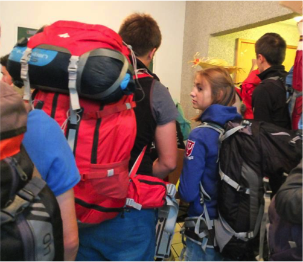
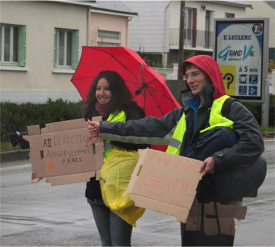
Dans le cas du Pouce d’Or, le temps risque d’être froid et pluvieux. Prévoyez des vêtements de pluie, voire un parapluie que vous pourrez accrocher au sac de rando une fois la pluie arrêtée. Conseil (qui sent le vécu) pensez à des chaussettes de rechange, des sacs plastiques pour ranger les choses humides ou protéger les choses sèches. Prévoyez également des vêtements chauds, vous les apprécierez grandement lorsque vous passerez 3 heures en pleine nuit sur une aire d'autoroute.
Vous allez, pour la plupart, avoir à marcher pas mal, voire beaucoup (pour traverser une ville) pensez donc à prendre des chaussures dans lesquelles vous êtes à l'aise et avec lesquelles vous pourrez faire un peu de marche.
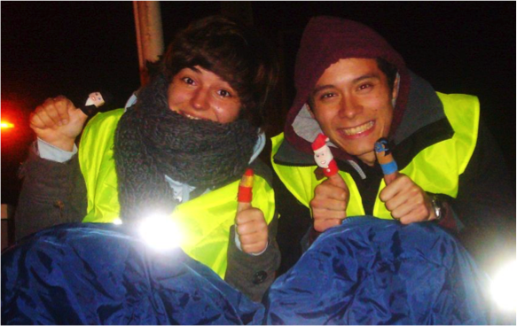
Prenez également un duvet. Un peu épais si possible; vous trouverez peut-être un endroit où dormir,
mais sait-on jamais !
Nourriture et boissons
Vous ne savez ni où, ni quand on vous déposera, et encore moins si vous y trouverez à manger ou à boire. Il est important que vous prévoyiez des réserves. Prenez au moins une grosse bouteille d’eau et pensez à la remplir lors de vos haltes en station-service. Prenez également des barres de céréales ou des gâteaux (prenez des trucs qui vous feront plaisir, c’est bon pour le moral). Prenez aussi des sandwichs ou autres nourritures froides que vous pourrez manger facilement et n’importe où (ne pas oublier une fourchette ou une cuillère, vous ne seriez pas les premiers à vous faire avoir). Vous pouvez aussi prendre des trucs pour les chochos. On a déjà vu des gens leur proposer des croissants, des bonbons ou des
gâteaux, voire des spécialités nantaises (un petit LU ça fait toujours plaisir) !!
Accessoires
Le gilet jaune est indispensable et obligatoire pour tout le monde. Prenez également une carte routière, pour pouvoir vous guider et savoir si les chauffeurs vont là où vous voulez. Elle vous servira aussi à adapter votre itinéraire en cours de route (vous n’irez peut-être pas jusqu’où vous aviez prévu). Vous pouvez demander des cartes gratuites au passage des péages. Elles ont l’avantage de présenter l’ensemble des stations-services existantes sur le réseau.
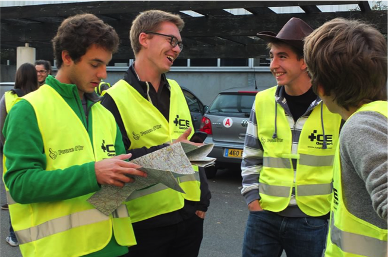
Prenez vos portables (pensez à les charger à fond), mais essayez d’alterner. N’allumez pas les deux téléphones constamment en même temps, il se pourrait que vous ayez à économiser votre batterie. Prenez quand même votre chargeur, il y a des prises électriques dans les stations-services ou des chargeurs qui se branchent sur les prises allume-cigare.
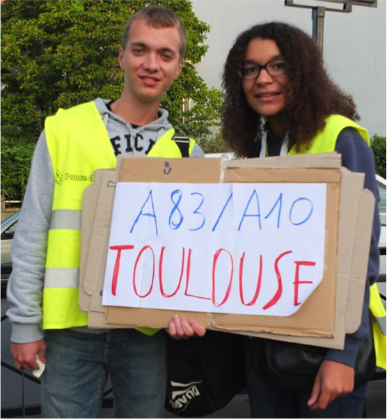
Préparez des cartons pour faire des panneaux de direction. Partez avec un bon petit stock car ce n’est pas dit que vous en trouviez en route. Vous pouvez également prendre une pochette carton ou plastique de feuilles blanches et du scotch. Ecrivez vos directions sur la feuille et scotchez-la à la pochette. Pensez également à emporter des feutres marqueurs.
Vous partez pour un voyage riche en souvenirs, prenez un appareil photo pour les immortaliser et les partager dès votre retour. Vous pouvez également prendre un petit cahier de route pour noter vos anecdotes, prendre les contacts des chochos…
Soyez en Forme
Le Pouce d’Or est une aventure fatigante (voire épuisante quand vous enchainez quasiment deux nuits blanches). Il est donc très important que vous partiez en forme. Nous vous déconseillons donc de faire une grosse chouille la veille, même si vous avez envie de fêter votre proche départ. La fatigue physique associée à la fatigue psychologique que vous allez accumuler peut être source d’inattentions ou de manque de vigilance. N’oubliez jamais que le risque zéro n’existe pas (ne voyez pas ici un moyen de vous décourager du stop, bien au contraire nous vous y engageons fortement, mais de façon responsable). Une bonne nuit de sommeil et un bon petit déj’ sont recommandés.
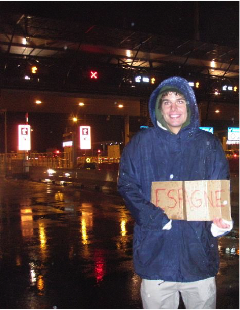
L'ATTENTE
On y est, il est 09h01 passé, et vous êtes prêts à stopper. Vous avez préparé la plus belle pancarte de l’histoire du stop (soyez inventifs et originaux, ça plaît bien), vous arborez votre plus beau sourire et vous tendez fièrement votre pouce droit.
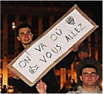
Déjà vingt voitures et vous êtes toujours là. Vous commencez à comprendre que ça ne va pas être forcément si facile (il peut très bien arriver en revanche d’être pris dès la première voiture). La patience est une des qualités nécessaires à l’autostoppeur et réciproquement le stop est une très bonne école pour l’apprendre.
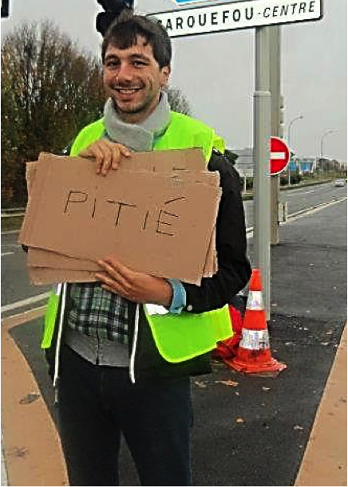
Gardez le moral et le sourire, peu importe depuis combien de temps vous attendez, un chauffeur ne voudra pas prendre une personne qui fait la gueule. Lors du Pouce d’Or vous êtes par binôme, profitez-en pour vous motiver l’un l’autre. L’expérience montre que quelque soit le temps attendu, vous finirez toujours par être pris.
Ceci dit, si vous poireautez à un endroit depuis des heures, il faut peut-être vous remettre en cause. Vous êtes peut-être mal placés, ou les gens ne comprennent pas ce que vous voulez ou encore plein d’autres raisons. Voici quelques astuces pour être pris plus facilement.
Si vous faites du stop sur le bord d’une route, votre emplacement est très important. Vous devez vous mettre à un endroit où vous êtes en sécurité et où une voiture peut s’arrêter sans danger. Vous ne devez pas faire prendre de risque aux automobilistes. Evitez donc les ronds-points, car les voitures arrivent vite dessus et ne peuvent pas s’y arrêter en sécurité. Préférez l’entrée ou la sortie du rond-point (entre 50 et 100 mètres avant ou après), sur les nationales il y a souvent de la place pour se positionner. Il faut que vous cherchiez également à vous mettre de façon à être vus le plus loin possible. Cela permet aux conducteurs de comprendre qu’il y a un autostoppeur, de juger s’il vous prend (il n’a que quelques secondes pour faire son choix donc à vous de le convaincre), et d’avoir le temps et la place pour s’arrêter. Vous pouvez également vous placer au niveau de feux tricolores car des voitures s’y arrêteront forcément et vous pourrez alors faire de grands sourires pour êtres pris.
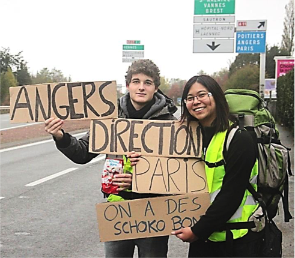
Une bonne pancarte peut être très utile. Au niveau d’un feu elle peut servir de premier moyen de communication avec les automobilistes. Les voitures restent souvent fenêtres fermées en vous voyant au feu, rassurez les avec votre pancarte et votre sourire. De façon générale, les pancartes amusantes aident à partir (chauffeur qui rit, à moitié parti !). Il existe plusieurs théories à propos des pancartes : si vous mettez une ville trop loin, les personnes qui ne vont pas jusque-là ne vous prendrons pas car ils n’ont pas forcément conscience que ça peut quand même vous avancer ; mais si vous mettez une ville trop près les gens ne voudrons pas vous prendre pour se réarrêter sous peu (ceci est vrai surtout sur les grandes routes). On vous conseille plutôt de mettre le numéro de la route que vous voulez prendre et la direction en indiquant la première grosse ville traversée et aussi la plus éloignée (par exemple si vous partez de Nantes pour Paris : A11-Dir Angers/Paris).
Parlons un peu de stop actif/stop passif. On entend par stop passif le stop au bord d’une route, pouce tendu et pancarte en évidence. Le stop actif consiste à aller directement à la rencontre des gens, de leur expliquer votre démarche et de leur demander directement s’ils peuvent vous avancer. Ce style de stop se pratique essentiellement sur les stations-services ou en ville. Dans le cas du Pouce d’Or n’hésitez pas à leur raconter pourquoi vous faite du stop, l’idée d’un concours de stop fait souvent rire les gens (et chocho qui rit…).
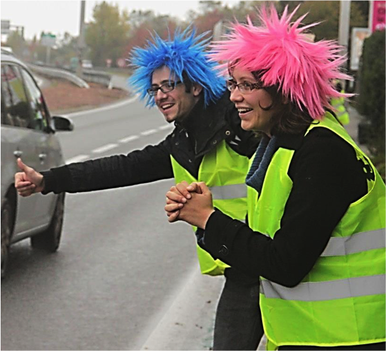
EN VOITURE
Vous y êtes enfin, une voiture s’arrête et vous propose de vous prendre. Avant de monter mettez-vous d’accord avec le chocho sur là où il peut vous amener. De plus, si vous ne le sentez pas n’hésitez pas à refuser, prétextant une mauvaise direction par exemple. Ne prenez pas de risques inutiles. De même, une fois dans une voiture, si vous ne sentez plus le conducteur ou si vous avez peur, demandez-lui de vous déposer dans le prochain endroit en sécurité.
Heureusement, la très grande majorité des personnes qui prennent des autostoppeurs sont des personnes saines d’esprit, et, souvent même, très gentilles. Certaines personnes n’hésiteront pas à faire un grand détour pour vous filer un coup de main.
A vous de renvoyer la pareille. Soyez toujours reconnaissants du service que l'on vous rend. Si vous voyez que la personne a envie de parler, tenez-lui la conversation , vous pouvez par exemple expliquer le concept du Pouce d'Or !
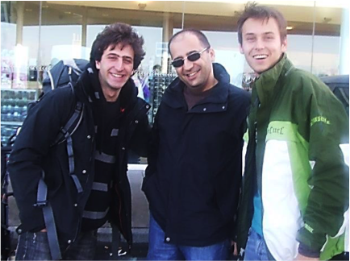
Avant d’arriver à destination assurez-vous que l'on vous dépose dans un endroit sûr et d’où vous pourrez repartir facilement de préférence (combien de personnes se sont faites déposer sur une bande d’arrêt d’urgence parce qu’elles ne s’étaient pas mises bien d’accord avec le chauffeur). Il vaut mieux vous arrêter vingt kilomètres moins loin que ce qu’il pourrait vous amener mais être déposés sur une grosse station-service, que de continuer et d'être déposés sur une bande d’arrêt d’urgence ou sur un chemin paumé. Si vous êtes sur autoroute, ne descendez jamais sur la bande d’arrêt d’urgence (espérance de vie inférieure à 20min), même si le chauffeur vous dit qu’il sort de l’autoroute et qu’il n’y a plus d’aire de stationnement où vous déposer. Sortez avec lui de l’autoroute et descendez éventuellement au péage pour reprendre quelqu’un qui rentre sur l’autoroute.
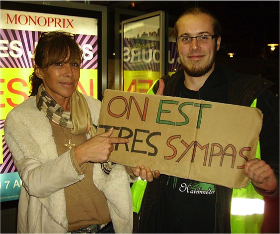
Une fois arrivés, n’oubliez pas de bien remercier le conducteur car l’image que vous lui laisserez pourra conditionner son avis sur les stoppeurs et sur le fait d’en reprendre ou non.